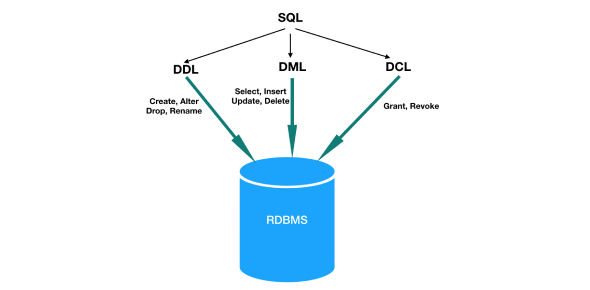

MySQL is a database management system. A database is a structured collection of data. It may be anything from a simple shopping list to a picture gallery or the vast amounts of information in a corporate network. To add, access, and process data stored in a computer database, you need a database management system such as MySQL Server. Since computers are very good at handling large amounts of data, database management systems play a central role in computing, as standalone utilities, or as parts of other applications.
Open source means it’s possible for anyone to use and modify the software. Anybody can download MySQL software from the internet and use it without paying for it. You can also change its source code to suit your needs. MySQL software uses the GNU General Public License (GPL) to define what you may and may not do with the software in different situations.
SQL : Structured query language (SQL) is a programming language for storing and processing information in a relational database. A relational database stores information in tabular form, with rows and columns representing different data attributes and the various relationships between the data values.
Structured query language (SQL) commands are specific keywords or SQL statements that developers use to manipulate the data stored in a relational database.
1. Data definition language(DDL) : Data definition language (DDL) refers to SQL commands that design the database structure. Database engineers use DDL to create and modify database objects based on the business requirements.
For example : the database engineer uses the CREATE command to create database objects such as tables, views, and indexes.
2. Data manipulation language(DML) : Data manipulation language (DML) statements write new information or modify existing records in a relational database.
For example : An application uses the INSERT command to store a new record in the database.
3. Data control language(DCL) : Database administrators use data control language (DCL) to manage or authorize database access for other users.
For example : They can use the GRANT command to permit certain applications to manipulate one or more tables.
SQL Server is the official name of Microsoft's relational database management system that manipulates data with SQL. The MS SQL Server has several editions, and each is designed for specific workloads and requirements.